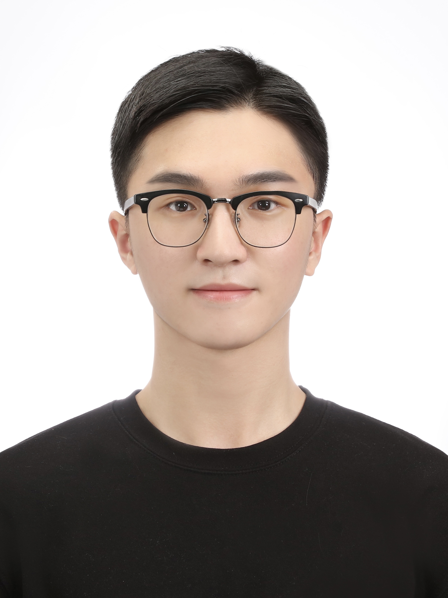

Professor
Woo Chang Kim (김우창) (Link to Full Curriculum Vitae)

Lab : IE B/D E2-2 #3107
E-mail : wkim(at)kaist.ac.kr
Tel : +82-42-350-3129
ACADEMIC POSITIONS
Professor, Industrial and Systems Engineering Department, KAIST, 2009 to Present
ADMINISTRATIVE AND SERVICE POSITIONS AT KAIST
[1] Head, Industrial and Systems Engineering Department, 2021 to 2022
[2] Head, Graduate School of Data Science, 2022
[3] Head, Graduate School of Knowledge Service Engineering, 2022
[4] Adjunct Professor, College of Business, 2021 to Present
[5] Director, Shinhan-KAIST Artificial Intelligence Finance Research and Development Center, 2019 to 2023
VISITING POSITIONS
[6] Visiting Professor, Department of Economics and Finance, LUISS Guido Carli, Rome, Italy, 2014
[7] Visiting Fellow, ORFE Department, Princeton University, Princeton, NJ, USA, 2013 to 2014
[8] Guest Researcher, Hausdorff Research Institute for Mathematics, University of Bonn, Bonn, Germany, 2013
EDUCATION
Ph.D., and M.A., Operations Research & Financial Engineering, Princeton University, 2009 and 2007,
respectively
M.S., and B.S., Industrial Engineering, Seoul National University, 2001 and 1999, respectively
EDITORIAL POSITIONS
[1] Associate Editor, Quantitative Finance (SSCI), 2023 to Present
[2] Managing Editor, Quantitative Finance (SSCI), 2017 to 2022
[3] Associate Editor, Optimization and Engineering (SCIE), 2014 to Present
[4] Editorial Board Member, Journal of Portfolio Management (SSCI), 2013 to Present
[5] Associate Editor, Journal of the Korean Institute of Industrial Engineers, 2012 to Present
[6] Topic Editor, Sustainability (SSCI, SCIE), 2020 to 2022
[7] Associate Editor, Management Science and Financial Engineering, 2012 to 2017
[8] Associate Editor, Quantitative Finance Letters, 2012 to 2016
[9] Guest Editor, Special Issue on Optimization Methods in Asset Management, IJFERM, 2017
[10] Guest Editor, Special Issue on FinTech, IE Magazine, 22 (4), 2015
[11] Guest Editor, Special Issue on Financial Engineering, JKIIE, Volume 38 (4), 2012
SERVICE AND NON-ACADEMIC POSITIONS
[1] 위원, 국회 연금개혁 특별위원회 민간자문위원회, 2023 –
[2] 위원, 보건복지부 고독사예방협의회, 2023 – 2025
[3] 위원, 개인정보보호위원회 개인정보미래포럼, 2022 – 2023
[4] 위원, 보건복지부 국민연금 기금운용발전전문위원회, 2022 – 2023
[5] 위원, 사회보장정보원 복지사각지대 발굴 자문위원회, 2021 – 2022
[6] 위원, 삼성글로벌리서치 디지털포럼, 2020 – 2022
[7] 평의원, 대한산업공학회, 2020 – 2021
[8] 이사, 한국경영과학회, 2018 –
[9] 위원, 보건복지부 국민연금 수탁자책임전문위원회, 2018 – 2020
[10] 자문위원, 육아정책연구소, 2018 – 2020
[11] 위원, 보건복지부 국민연금 기금운용발전전문위원회, 2017 – 2018
[12] Founding CEO, Veranos Technologies, 2017 – 2018
[13] 위원, 금융위원회 테크자문단, 2017 – 2018
[14] 위원, 보건복지부 국민연금기금 의결권행사 전문위원회, 2016 – 2018
[15] 자문교수, 삼성자산운용, 2016 – 2021
[16] Founder and Executive Advisor, DPT Capital Management, LLC, Princeton, NJ, 2010 – 2014
[17] Instructor Officer (Final Rank: Lieutenant Jr. Grade), Republic of Korea Navy, 2001 – 2004
Students
Ph.D. Students
Min Jeong Park (박민정)
E-mail : mjpark0912@kaist.ac.kr
M.S. in Industrial & Systems Engineering, KAIST ('14)
B.S. in Industrial & Systems Engineering, KAIST ('11)
B.S. in Management Science, KAIST ('11)
Munki Chung (정문기)
E-mail : moonki93@kaist.ac.kr
M.S. in Industrial & Systems Engineering, KAIST ('18)
B.S. in Mathematical Sciences, KAIST ('16)
Chanyeong Kim (김찬영)
E-mail : kim.chanyeong@kaist.ac.kr
M.S. in Industrial & Systems Engineering, KAIST ('22)
B.S. in Industrial & Systems Engineering, KAIST (‘20)
Haeun Jeon (전하은)
E-mail : haeun39@kaist.ac.kr
M.S. in Industrial & Systems Engineering, KAIST ('23)
B.S. in Industrial & Management Engineering, POSTECH ('20)
Mingyu Yang (양민규)
E-mail : yangmg1216@kaist.ac.kr
M.S. in Industrial & Systems Engineering, KAIST ('24)
B.S. in Industrial & Systems Engineering, KAIST ('22)
B.S. in Computer Science, KAIST ('22)
Gwanghyun Lee (이광현)
E-mail : rhkdgus0414@kaist.ac.kr
M.S. in Industrial & Systems Engineering, KAIST ('25)
B.S. in Industrial & Systems Engineering, KAIST ('23)
M.S. Students
Woosang Yim (임우상)
E-mail : woosang98@kaist.ac.kr
B.S. in Industrial & Systems Engineering, KAIST (‘23)
Beomjun Kim (김범준)
E-mail : bjkim17@kaist.ac.kr
B.S. in Mathematical Sciences, KAIST (‘24)
B.S. in Computer Science, KAIST ('24)
Sungho Lee (이승호)
E-mail : boulder_sean@kaist.ac.kr
B.S. in Industrial Engineering, Hanyang University (‘24)
Seunghoon Choi (최승훈)

E-mail : shchoi0307@kaist.ac.kr
< b>B.S. in Industrial Engineering, Hanyang University (‘24)
Sukmin Hwang (황석민)
E-mail : smhwang9@kaist.ac.kr
B.S. in Mathematics at Imperial College London (‘21)
Gimin Kang (강기민)
E-mail : kgm4752@kaist.ac.kr
B.S. in Industrial & Systems Engineering, KAIST (‘25)
Sangwan Kim (김상완)
E-mail : sangwan.kim@kaist.ac.kr
B.S. in Economics, Yonsei University (‘25)
B.S. in Applied Statistics, Yonsei University (‘25)
Daho Chun (천다호)
E-mail : hidaho@kaist.ac.kr
B.S. in Industrial & Systems Engineering, KAIST (‘25)
Post-Doctoral Researchers
Hwayong Choi (최화용)
E-mail : ganarisg@kaist.ac.kr
PostDoc. in Industrial Engineering, UNIST ('20)
PostDoc. in Industrial & Systems Engineering, KAIST ('19)
Ph.D. in Industrial & Systems Engineering, KAIST ('18)
M.S. in Industrial & Systems Engineering, KAIST ('08)
B.S. in Industrial Engineering, Hanyang University ('06)